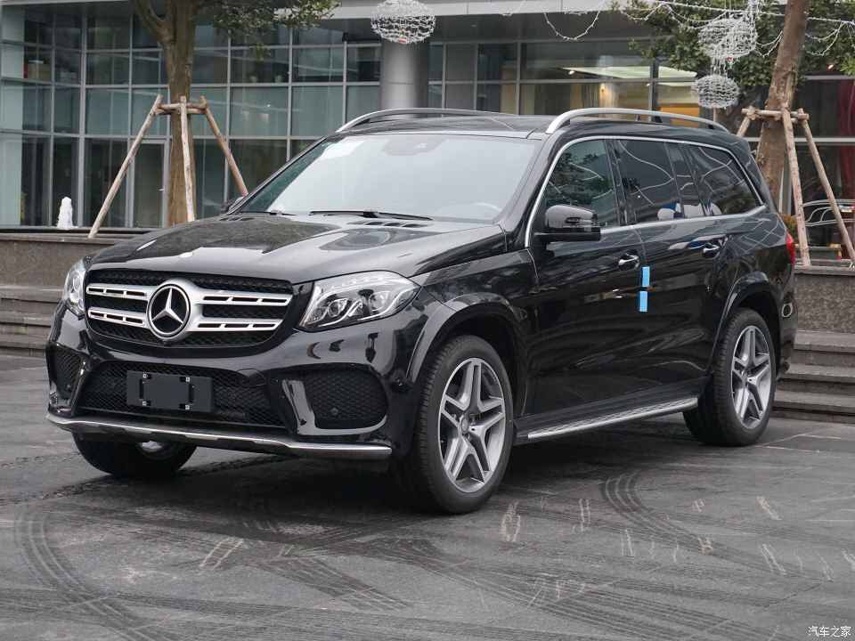
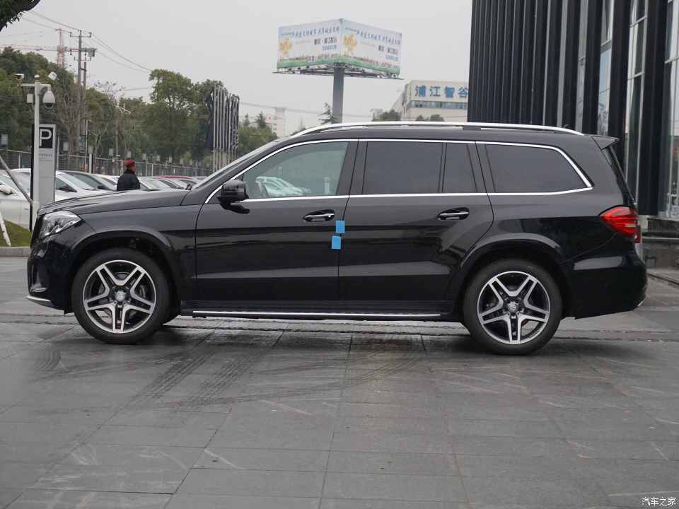
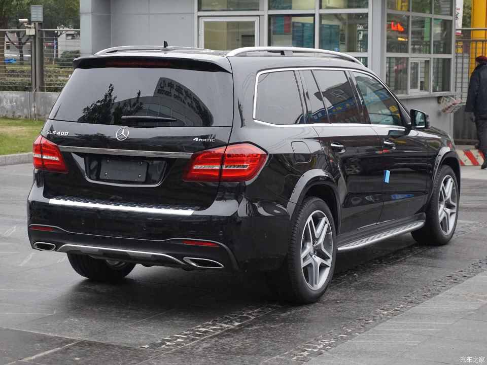
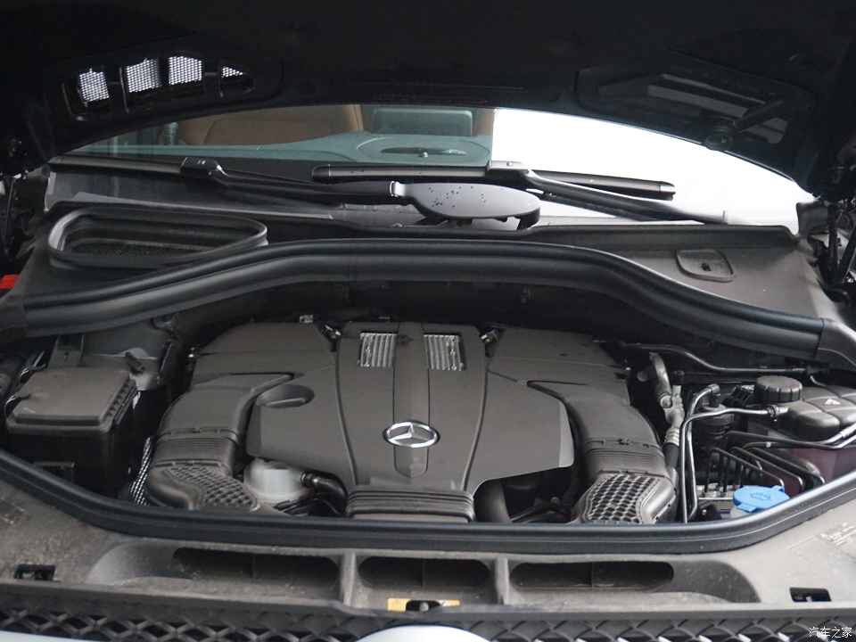

说起海外五大车展，两年一届的东京车展是规模最小的。单从车型数量以及火爆程度上来看，甚至连国内的成都车展都比不上。东京车展的内敛与市场规模有很大的关系，海外厂商更愿意将全新车型的首发放在一海之隔的北京/上海车展，毕竟中国有大量的消费者可以买单。所以说，东京车展其实就是日本厂商孤独的盛宴。
  VISION COUPE概念车的特殊之处，就在于它展示了马自达最新一代的魂动设计理念。从这款概念车我们可以了解到，未来马自达的家族式前脸将会采用更加立体和扁平的设计，这与奥迪全新的前脸设计手法较为接近，不过真正实现起来，就要看各自设计师的功底了。另外，新一代马自达车型的灯组造型也会更加扁平化，LED灯组也会更大面积的普及。
VISION COUPE概念车的特殊之处，就在于它展示了马自达最新一代的魂动设计理念。从这款概念车我们可以了解到，未来马自达的家族式前脸将会采用更加立体和扁平的设计，这与奥迪全新的前脸设计手法较为接近，不过真正实现起来，就要看各自设计师的功底了。另外，新一代马自达车型的灯组造型也会更加扁平化，LED灯组也会更大面积的普及。